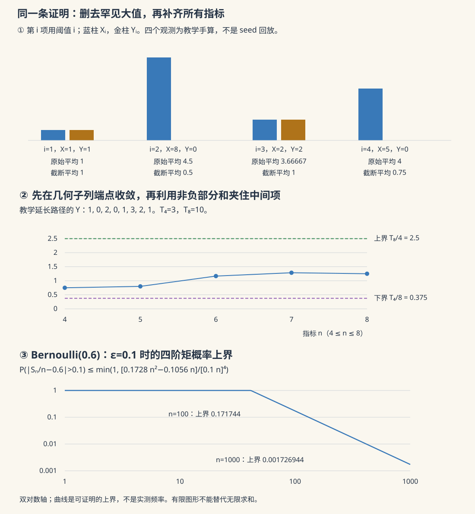

本页目录
测度概率 II · 独立性与大数定律
对标：Durrett Probability: Theory and Examples §2.1–2.4。前置：测度、期望与收敛工具、本科概率极限定理。 这页回答一个具体问题：不断增加观测，平均数为什么有时稳定、有时被大值反复推走、有时一直保留共同的随机性？先分清定理的条件，再分别证明尾事件的 0–1 律、四阶矩强大数律和一般一阶矩强大数律。
1. 四种模型，四种不同的结论
记 \(S_n=X_1+\cdots+X_n\)。“\(S_n/n\) 几乎处处趋于 \(\mu\)”是指：存在一个概率为 \(1\) 的事件，在其中每一条无限路径上，所有足够晚的平均都靠近 \(\mu\)。这比“某个很大的 \(n\) 上，多数路径靠近 \(\mu\)”更强，也不能由一条有限曲线证明。
| 理想模型 | 一阶绝对矩 | 方差 | 依赖结构 | 长期结论 |
|---|---|---|---|---|
| Bernoulli\((0.6)\) | \(0.6\) | \(0.24\) | i.i.d. | 平均 a.s. 趋于 \(0.6\) |
| Pareto\((\alpha=1.5)\)，支集 \([1,\infty)\) | \(EX=3\) | \(+\infty\) | i.i.d. | 平均仍 a.s. 趋于 \(3\) |
| 标准 Cauchy | \(+\infty\)，均值未定义 | 未定义 | i.i.d. | 平均的分布始终是标准 Cauchy；不收敛到有限常数 |
| \(X_i=Z\)，\(P(Z=\pm1)=1/2\) | \(1\) | \(1\) | 完全依赖 | 平均恒为 \(Z\)，极限是随机的，不是 \(EZ=0\) |
这里“i.i.d.”指相互独立且同分布。有限方差是方便的充分条件，一般 i.i.d. 强大数律只需 \(E|X_1|<\infty\)。反过来，单个变量的可积性也不能消除所有观测共同携带的随机量 \(Z\)。
Pareto 的生存函数为 \(P(X>x)=x^{-\alpha}\)（\(x\ge1\)）。直接积分给出
所以 \(\alpha=1.5\) 有均值、无有限方差；\(\alpha>2\) 才有有限方差。\(\alpha\le1\) 时非负平均会趋于 \(+\infty\)，不是在某个有限均值附近“收敛得慢”。
2. 从事件独立，到分组后的独立
一族 \(\sigma\)-代数 \((\mathcal F_i)\) 独立，是说：任取有限个不同指标 \(i_1,\dots,i_m\) 及 \(A_j\in\mathcal F_{i_j}\)，
随机变量独立指它们生成的 \(\sigma\)-代数独立。只检验两两乘积分解叫两两独立，一般不能推出上式。例如独立的公平符号 \(U,V\) 中，\(U,V,UV\) 两两独立，但三者的乘积恒为 \(1\)，不是相互独立。
π-系判据。 若每个 \(\mathcal P_i\) 是含 \(\Omega\) 的 π-系，且所有有限选择在这些 π-系上满足乘积分解，则 \(\sigma(\mathcal P_i)\) 独立。
证明时固定一个有限指标组，先固定其余坐标的事件。对第一个坐标，满足乘积分解的事件构成 λ-系：\(\Omega\) 的等式来自其余坐标的乘积分解，补集用相减，不交可数并用可数可加性。π–λ 定理把这一坐标升级到整个 \(\sigma\)-代数。保持已经升级的坐标任意，再逐一升级剩下坐标，即得结论。含 \(\Omega\) 的要求也可通过添加 \(\Omega\) 实现，但须同时检查所有较小指标组的分解。
对实随机变量，只需检验有限维分布函数
因为半直线连同 \(\mathbb R\) 生成 Borel 集。这个判据不要求概率密度存在。
分组封闭性。 相互独立的一族变量，取互不相交的指标组，组内可测加工后仍独立。例如 \(f(X_1,\dots,X_m)\) 与 \(g(X_{m+1},X_{m+2},\dots)\) 独立。先用有限柱事件验证两组的分解，再各用一次 π–λ 扩展；无限组也由柱事件生成。不能将有重叠指标的两组直接套入。
3. Kolmogorov 0–1 律：只针对尾事件
定义尾 \(\sigma\)-代数
一个事件若属于 \(\mathcal T\)，无论删掉多长的有限前缀，都能从剩余坐标判断它。实值变量的级数 \(\sum X_n\) 是否收敛、平均 \(S_n/n\) 是否收敛、\(\limsup S_n/n\le a\)，都是尾事件。例如删掉前 \(m\) 项对平均只改变 \(S_m/n\to0\)。但“\(\sum X_n\) 收敛后的和大于 \(0\)”通常依赖前缀，不能混同于“是否收敛”。
定理。 若 \((X_n)\) 相互独立，则每个 \(A\in\mathcal T\) 满足 \(P(A)\in\{0,1\}\)。
完整证明。 记 \(\mathcal F_n=\sigma(X_1,\dots,X_n)\)。分组封闭性给出 \(\mathcal F_n\) 与 \(\mathcal T\) 独立。递增的 \(\mathcal F_n\) 的并集是 π-系：任意两个成员都属于某个共同的 \(\mathcal F_N\)。固定 \(A\in\mathcal T\)，对这个 π-系应用 π–λ，得到 \(A\) 与整个 \(\mathcal F_\infty=\sigma(X_1,X_2,\dots)\) 独立。由于 \(A\) 本身也属于 \(\mathcal F_\infty\)，
只有 \(0\) 和 \(1\) 满足这个等式。证明没有决定具体是哪一个值。
尾随机变量为什么是常数？ 若实值 \(L\) 对 \(\mathcal T\) 可测，则每个有理数 \(q\) 的事件 \(\{L\le q\}\) 概率均为 \(0\) 或 \(1\)。分布函数单调，且实值性保证两端极限为 \(0,1\)。令 \(c=\inf\{q\in\mathbb Q:P(L\le q)=1\}\)；用趋向 \(c\) 两侧的可数有理数及概率的连续性，得 \(P(L=c)=1\)。扩展实值的尾函数还允许常数 \(\pm\infty\)。
必须检查极限值的尾可测性，不能只凭“收敛事件有概率 \(1\)”就断言极限为常数。完全依赖例子的平均处处收敛到 \(Z\)，但不满足这里的独立假设。甚至对独立变量，随机级数可以 a.s. 收敛到非常数的和，因为它的和并非尾函数。
4. 四阶矩证明：先看清可求和从哪里来
设 \(X_i\) i.i.d.，\(EX_i=\mu\) 且 \(EX_i^4<\infty\)。令 \(W_i=X_i-\mu\)，\(R_n=\sum_{i=1}^nW_i\)，\(m_r=EW_1^r\)。展开四次方后，含有某个一次幂的项因独立和零均值消失；剩下单指标四次项，以及每一对指标的 \(6\) 种排列：
因此对 \(\varepsilon>0\)，
右侧对 \(n\) 可求和。BC-I 给每个固定 \(\varepsilon\) 的越界只有有限次；再对 \(\varepsilon=1/k\) 取可数交，得到 \(S_n/n\to\mu\) a.s.
二阶矩的直接 Chebyshev 界 \(m_2/(n\varepsilon^2)\) 不可求和，说明这一条逐项套 BC 的证明走不通，不说明有限方差只能推出弱大数律。下一节会在更弱的一阶矩条件下完成强大数律。
以 Bernoulli\((0.6)\) 为例，\(m_2=0.24\)，\(m_4=0.0672\)，故
当 \(\varepsilon=0.1\)，\(n=100\) 的四阶界为 \(0.171744\)，\(n=1000\) 时为 \(0.001726944\)。这只是概率上界，既不是观测到的越界频率，也不等于精确二项分布尾概率。
5. 一般一阶矩强大数律：把骨架补成证明
定理。 若 \(X_i\) 同分布、两两独立，且 \(E|X_1|<\infty\)，则
这涵盖通常的 i.i.d. 强大数律。下面的证明只用两两独立来相加方差；不要因此把上一节的 Kolmogorov 0–1 律也改成两两独立版本。
5a. 先去掉罕见大值，最后再放回去
分别对 \(X_i^+\)、\(X_i^-\) 证明即可，因此先设 \(X_i\ge0\)，\(\mu=EX_1<\infty\)。令
同分布和尾积分公式给出
BC-I 表明 a.s. 只有有限项被改动。于是 \(S_n-T_n\) 在每条这样的路径上最终等于某个有限随机常数，除以 \(n\) 后趋于零。注意截断是第 \(i\) 项用阈值 \(i\)，不是随最终样本数 \(n\) 把所有过去数据重新截一次。
5b. 一阶矩怎样买到足够的方差控制
记 \(v_i=\operatorname{Var}(Y_i)\)。对于固定 \(x\ge0\)，有
当 \(0\le x\le1\)，利用 \(\sum_{i\ge1}i^{-2}\le2\) 及 \(x^2\le x\)；当 \(x>1\)，令 \(m=\lceil x\rceil\ge2\)，则和不超过 \(\int_{m-1}^{\infty}t^{-2}dt=1/(m-1)\le2/x\)。这包括整数端点 \(x=m\)。
对非负项用 Tonelli 交换求和与期望，
各 \(Y_i\) 不再同分布，却仍两两独立，所以 \(\operatorname{Var}(T_n)=\sum_{i\le n}v_i\)。
5c. 几何子列把不可求和的控制变成可求和
固定 \(a>1\)，令 \(n_k=\lfloor a^k\rfloor\)（早期重复值不影响最终的极限）。因为 \(\lfloor a^k\rfloor\ge a^k/2\)，
于是
BC-I 加可数阈值 \(\varepsilon=1/j\) 给出中心化子列 a.s. 趋零。同时 \(EY_i=E[X_1\mathbf1_{\{X_1\le i\}}]\to\mu\)，Cesàro 平均给 \(ET_n/n\to\mu\)，因此 \(T_{n_k}/n_k\to\mu\) a.s.
5d. 用非负性填上子列之间的空隙
当 \(n_k\le n<n_{k+1}\)，\(T_n\) 的单调性给
由于 \(n_{k+1}/n_k\to a\)，得
依次对 \(a=1+1/j\) 取概率为 \(1\) 的事件的可数交，再令 \(j\to\infty\)，上下界都趋于 \(\mu\)。放回 5a 的有限项差，最后对正负部分分别相减，证明结束。这里的夹逼作用在非负部分，不能直接用于有正有负的部分和。
6. “条件精确”要说清收敛到什么
对于 i.i.d. 实值变量，若 \(E|X_1|=\infty\)，则
证明：尾积分发散意味着 \(\sum_nP(|X_1|>n)=\infty\)；独立性与 BC-II 给 \(|X_n|>n\) 无限次发生，概率为 \(1\)。但若平均在某条路径上趋于有限的 \(L\)，
产生矛盾。这个必要性论证针对 i.i.d.，不能擅自推广到任意同分布依赖序列。
“没有有限极限”仍允许趋于 \(+\infty\)。若 \(X_i\ge0\) 且 \(EX_1=\infty\)，固定整数 \(M\)，对有界的 \(X_i\wedge M\) 用强大数律，得到
对所有正整数 \(M\) 取可数交，MCT 令右侧趋于 \(+\infty\)，便得 \(S_n/n\to+\infty\) a.s. 若 \(EX_1^+=\infty\)、\(EX_1^-<\infty\)，拆正负部分同样得 \(+\infty\)；反向得 \(-\infty\)。正负两部分都无限时，原期望未定义，不能相减成某个“均值”。
标准 Cauchy 的特征函数是 \(\phi(t)=e^{-|t|}\)，所以独立平均的特征函数
每个 \(n\) 都有 \(P(|S_n/n|>1)=1/2\)，故不依概率趋零。只知道每个 \(n\) 的边际分布相同，本身不足以排除收敛到某个随机极限；这里不可能有有限 a.s. 极限，要用上面的必要性证明。无限重尾与完全依赖是两种不同的失败机制。
7. 实验：每一个观测和截断都能查账
先判断方差、Cauchy 与共同随机性，再展开曲线
默认 \(n=1000\)、seed \(=13\)，Pareto 的默认 \(\alpha=1.5\)。可改 \(\alpha\)，对照 \(\alpha\le1\)、\(1<\alpha\le2\) 与 \(\alpha>2\) 的不同结论。第一张图画每一步原始平均、截断平均与截断期望的平均；第二张图画每个原始观测与截断值。不抽稀、不裁掉极端值，纵轴按完整数据缩放，所以较小波动可能压在一起；完整表格保留全部数值。
实验对每项定义 \(Y_i=X_i\mathbf1_{\{|X_i|\le i\}}\)。对于 Pareto，\(i\ge1\) 时
当幂指数使分母为零时用对数值，不把 \(\alpha=1,2\) 当成数值异常。例如 \(\alpha=1.5,i=4\)，
这不是 \(E(X\wedge4)\)；后者还包含被封顶的尾部贡献 \(4P(X>4)=0.5\)，因而为 \(2\)。截断方式须与证明一致。
没有 JavaScript 时，也可手算路径 \(1,8,2,5\)：逐项阈值 \(1,2,3,4\) 给截断值 \(1,0,2,0\)；原始平均为 \(1,4.5,11/3,4\)，截断平均为 \(1,1/2,1,3/4\)。这组数是教学例子，不声称来自默认 seed。
模型表给的是理想概率分布的条件与期望；固定 seed 回放用有限精度伪随机数，既不产生真正独立的无限序列，也无法保留无限远的尾部。表中的理论均值、方差和尾概率从分布公式求得，不从回放反推。对完全依赖模型，逐项方差仍能计算，但不能把它们相加当作部分和方差。

8. 配套工具：极大不等式需要中心化
Kolmogorov 极大不等式。 独立、零均值、有限方差的 \(W_i\)，记 \(R_k=\sum_{i\le k}W_i\)。对 \(x>0\)，
令 \(A_k\) 表示首次达到 \(|R_k|\ge x\) 的时刻是 \(k\)。这些事件不交，且 \(A_k,R_k\) 只依赖前 \(k\) 项。未来增量独立且均值为零，因此
求和即得。没有中心化时，不能用仅含方差的右侧控制有漂移的部分和。它控制的是截至 \(n\) 的整段路径；鞅收敛与极大不等式中的 Doob 不等式提供更一般的框架。
三级数定理（引用，后续工具）。 对独立实值 \(X_n\)，固定 \(c>0\)，令 \(Z_n=X_n\mathbf1_{\{|X_n|\le c\}}\)。级数 \(\sum X_n\) a.s. 收敛，当且仅当 \(\sum P(|X_n|>c)<\infty\)、数值级数 \(\sum EZ_n\) 收敛、\(\sum\operatorname{Var}(Z_n)<\infty\)。条件对某个 \(c>0\) 成立即足够，收敛时对每个 \(c>0\) 都成立。这里研究的是级数本身，不是除以 \(n\) 的平均。
9. 三道完整练习
A · 尾事件与收敛半径。 i.i.d. 的 \(X_n\)，设 \(p=P(X_1>0)\)，求 \(P(X_n>0\text{ i.o.})\)。再说明随机幂级数 \(\sum_{n\ge0}X_nz^n\) 的收敛半径为何是确定的扩展非负常数。
先完成 A，再核对
若 \(p=0\)，可数并给“曾经出现正值”概率为 \(0\)，所以 i.o. 概率为 \(0\)。若 \(p>0\)，\(\sum_n p=\infty\)，BC-II 给 i.o. 概率为 \(1\)。“分布非退化”不保证 \(p>0\)，例如在 \(-2,-1\) 上各取一半。
根上极限不受有限前缀影响，是扩展非负尾函数；0–1 律的可数阈值论证使它 a.s. 为常数，倒数 \(R\) 也如此。根上极限本身不是收敛半径。
B · 两两独立与平均。 独立公平符号 \(U,V\)，列出 \((U,V,UV)\) 的四种等概率结果，验证两两独立但非相互独立。再解释本页一般强大数律为什么能使用两两独立，而四阶展开不能直接照搬。
先完成 B，再核对
四行是 \((1,1,1)\)、\((1,-1,-1)\)、\((-1,1,-1)\)、\((-1,-1,1)\)，各概率 \(1/4\)。任取两列，四个符号组合都恰出现一次，所以独立；三列乘积恒为 \(1\)，例如全为 \(-1\) 的概率为 \(0\)，不是 \((1/2)^3\)。
一般证明中，截断保留两两独立，已足以使方差中的协方差全为零。四阶展开会遇到涉及三或四个不同变量的乘积，不能仅靠两两独立把它们分解。本例是有限结构示意，不把三个变量无限重复后冒充两两独立序列。
C · 蒙特卡洛何时有均值，何时有常规误差条？ 用 i.i.d. Pareto\((1.5)\) 样本估计 \(\theta_\beta=EX^\beta\)，分别讨论 \(\beta=0.5,1,1.5\)。
先完成 C，再核对
当 \(\beta=0.5\)，\(\theta_\beta=1.5\)，二阶矩 \(EX=3\)，所以 \(\operatorname{Var}(X^{0.5})=3-1.5^2=0.75\)；SLLN 与有限方差的经典 CLT 都适用，渐近标准误为 \(\sqrt{0.75/n}\)。
当 \(\beta=1\)，均值 \(3\) 有限，SLLN 仍适用，但方差无限；不能使用把总体方差当成有限数的通常 \(\sigma/\sqrt n\) 误差条。
当 \(\beta=1.5\)，非负目标的期望为 \(+\infty\)，样本平均 a.s. 趋于 \(+\infty\)。不存在要估计的有限 \(\theta_\beta\)。对一般可测 \(g\)，i.i.d. 蒙特卡洛的 SLLN 条件是 \(E|g(X)|<\infty\)；MCMC 等依赖采样还须另核对遍历条件。
10. 随手核对的条件表
| 工具 | 本页使用的条件 | 得到什么 | 没有承诺什么 |
|---|---|---|---|
| Kolmogorov 0–1 | 相互独立，事件尾可测 | 概率是 \(0\) 或 \(1\) | 不决定具体是哪一个 |
| 四阶矩路线 | i.i.d.，有限四阶矩 | 可求和越界界，a.s. 收敛 | 四阶矩并非必要 |
| 一般强大数律 | 两两独立、同分布、\(L^1\) | 平均 a.s. 趋于期望 | 不自动给有限样本速率 |
| 有限极限的必要性 | i.i.d.，\(E\lvert X\rvert=\infty\) | a.s. 无有限平均极限 | 不排除趋于 \(\pm\infty\) |
| Kolmogorov 极大界 | 独立、中心化、有限方差 | 一段路径的越界概率界 | 不能忽略漂移 |
延伸核对：Durrett 的作者课程页与第五版书稿，第 2 章的独立性、Borel–Cantelli、强大数律和随机级数。证明中的截断、Tonelli、MCT 及可数阈值应与上一页配合使用。接下来读条件期望，把无条件平均推广为给定信息后的预测。